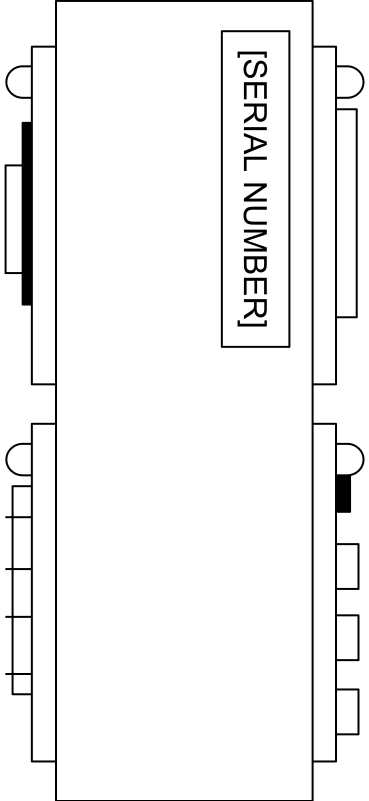
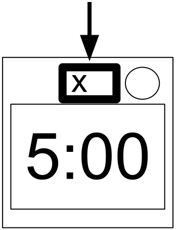
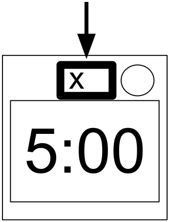
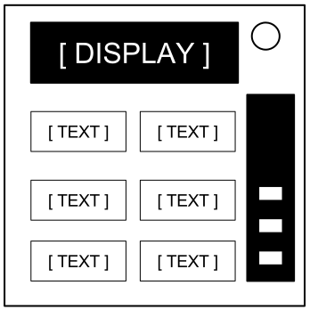
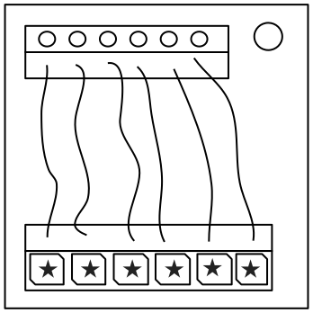

Keep Talking and Nobody Explodes v. 1
Вступление
Добро пожаловать в опасный и трудный мир обезвреживания бомб.
Внимательно изучите это руководство; вы эксперт. На страницах руководства вы найдете всё, что необходимо знать о том, как обезвредить даже самые коварные бомбы.
И помните — одна оплошность, и всё может скверно закончиться!
Keep Talking and Nobody Explodes v. 1
Обезвреживание бомб
Обезвреживание бомб
Бомба взрывается тогда, когда её обратный таймер доходит до 0:00, или когда было зафиксировано слишком много ошибок. Единственный способ обезвредить бомбу — это обезвредить все её модули, прежде чем на таймере кончится время.
Пример бомбы
 Вид спереди |  Вид сбоку |
Модули
Каждая бомба включает в себя до 11 модулей, которые необходимо обезвредить. Каждый модуль автономен; их можно обезвреживать в любом порядке.
Инструкции по обезвреживанию модулей можно найти в 1 разделе. "Нестабильные" модули требуют особого подхода и описаны во 2 разделе.
Ошибки
Индикатор ошибок


Если Сапёр допускает ошибку, это будет отображено на индикаторе ошибок над обратным таймером. Бомбы с индикатором ошибок взрываются на третьей ошибке. С каждой новой допущенной ошибкой таймер будет идти быстрее.
Если над таймером нет индикатора, то бомба взорвется при первой же ошибке, не оставляя шансов на оплошности.
Сбор информации
Некоторые инструкции по обезвреживанию требуют определенной информации о бомбе, например, её серийный номер. Подобная информация обычно располагается сверху, снизу или по бокам бомбы. Смотрите Приложения А, Б и В для соответствующих инструкций, полезных при обезвреживании определенных модулей.
Keep Talking and Nobody Explodes v. 1
Раздел 1: Модули

Раздел 1: Модули
Модули можно определить по светодиоду в правом верхнем углу. Горящий зеленым светодиод указывает, что модуль уже обезврежен.
Для обезвреживания бомбы необходимо обезвредить все модули.
Keep Talking and Nobody Explodes v. 1
Провода

Провода
Провода - кровь электроники! Стоп, нет, кровь — это электричество. Провода, скорее, артерии. Вены? Не важно…
- Модуль с проводами имеет от 3 до 6 проводов.
- Только один правильный провод необходимо перерезать для обезвреживания модуля.
- Нумерация проводов отсчитывается, начиная от верхнего.
|
3 провода: Если нет красных проводов, режьте второй. Иначе, если последний провод белый, режьте последний. Иначе, если синих проводов больше, чем один, режьте последний синий. Иначе режьте последний. |
|
4 провода: Если красных проводов больше, чем один, и последняя цифра серийного номера нечетная, режьте последний красный. Иначе, если последний провод желтый, а красных проводов нет, режьте первый. Иначе, если синий провод всего один, режьте первый. Иначе, если желтых проводов больше, чем один, режьте последний. Иначе режьте второй. |
|
5 проводов: Если последний провод черный, и последняя цифра серийного номера нечетная, режьте четвертый. Иначе, если красный провод всего один, а желтых проводов больше, чем один, режьте первый. Иначе, если черных проводов нет, режьте второй. Иначе режьте первый. |
|
6 проводов: Если желтых проводов нет, и последняя цифра серийного номера нечетная, режьте третий. Иначе, если желтый провод всего один, а белых проводов больше, чем один, режьте четвертый. Иначе, если красных проводов нет, режьте последний. Иначе режьте четвертый. |
Keep Talking and Nobody Explodes v. 1
Кнопка

Кнопка
Кажется, что если на кнопке написано, что её нужно нажать, то тут и думать не о чем. Вот из-за такого люди и взрываются.
Смотрите Приложение А для определения индикатора.
Смотрите Приложение Б для определения батарейки.
Следуйте следующим правилам в том порядке, в котором они указаны. Выполните первое подходящее действие:
- Если кнопка синяя, а на кнопке написано "Abort", задержите кнопку и смотрите пункт "Удержание кнопки".
- Если на бомбе больше 1 батарейки, а на кнопке написано "Detonate", нажмите и резко отпустите кнопку.
- Если кнопка белая, а на корпусе бомбы есть горящий индикатор "CAR", задержите кнопку и смотрите пункт "Удержание кнопки".
- Если на бомбе больше 2 батареек, а на корпусе бомбы есть горящий индикатор "FRK", нажмите и резко отпустите кнопку.
- Если кнопка желтая, задержите кнопку и смотрите пункт "Удержание кнопки".
- Если кнопка красная, а на кнопке написано "Hold", нажмите и резко отпустите кнопку.
- Если не подходит ни одно из вышеперечисленных правил, задержите кнопку и смотрите пункт "Удержание кнопки".
Удержание кнопки
Если вы начали удерживать кнопку, на правой стороне модуля зажжется цветная полоска. В зависимости от её цвета вам нужно отпустить кнопку в определенный момент времени:
- Синяя полоска: отпустите, когда любая цифра таймера будет равна 4.
- Белая полоска: отпустите, когда любая цифра таймера будет равна 1.
- Желтая полоска: отпустите, когда любая цифра таймера будет равна 5.
- Любая другая полоска: отпустите, когда любая цифра таймера будет равна 1.
Keep Talking and Nobody Explodes v. 1
Клавишные панели

Клавишные панели
Непонятно, что это за закорючки, но подозреваю, что они какие-то оккультные.
- Лишь один из столбцов ниже содержит все четыре символа с клавиатуры.
- Жмите четыре клавиши в том порядке, в котором эти символы расположены в этом столбце сверху вниз.
 |  |  |  |  | | |||||
 | |  |  |  | | |||||
 |  |  |  | |  | |||||
 | |  |  |  |  | |||||
|  |  | | | | |||||
 | | |  |  |  | |||||
| | | |  |  |
Keep Talking and Nobody Explodes v. 1
Саймон говорит

Саймон говорит
Это как та детская игрушка, где нужно было повторять то, что светится, только это какая-то подделка, которую наверняка купили в магазине "всё по тридцать".
- Загорается одна из цветных кнопок.
- Используя подходящую таблицу снизу, нажмите на кнопку соответствующего цвета.
- Загорится та же кнопка, что и в начале, а за ней еще одна. Повторите эту последовательность в том же порядке, используя таблицу цветов.
- Последовательность будет удлиняться после каждой успешно введенной последовательности, пока модуль не будет обезврежен.

Если в серийном номере содержится гласная:
| Красная вспышка | Синяя вспышка | Зеленая вспышка | Желтая вспышка | ||
|---|---|---|---|---|---|
| Нажмите: | Нет ошибок | Синий | Красный | Желтый | Зеленый | 1 ошибка | Желтый | Зеленый | Синий | Красный | 2 ошибки | Зеленый | Красный | Желтый | Синий |
Если в серийном номере гласных нет:
| Красная вспышка | Синяя вспышка | Зеленая вспышка | Желтая вспышка | ||
|---|---|---|---|---|---|
| Нажмите: | Нет ошибок | Синий | Желтый | Зеленый | Красный | 1 ошибка | Красный | Синий | Желтый | Зеленый | 2 ошибки | Желтый | Зеленый | Синий | Красный |
Keep Talking and Nobody Explodes v. 1
А вас как зовут

А вас как зовут
Эта игра слов практически взята из одной известной репризы, и тут можно было бы посмеяться, если бы она не была привязана к бомбе. Буду краток, а то слова всё усложняют.
- Зачитайте слово на экране и определите в 1 шаге, какую кнопку следует прочитать.
- Используя слово с этой кнопки, определите во 2 шаге, какую кнопку следует нажать.
- Повторяйте, пока не обезвредите модуль.
Шаг 1:
В зависимости от слова на экране прочитайте слово на определяемой ниже кнопке и перейдите к шагу 2:
|
|
|
|
|
| ||||||||||||||||||||||||||||||||||||||||||||||||
|
|
|
|
| |||||||||||||||||||||||||||||||||||||||||||||||||
|
|
|
|
|
| ||||||||||||||||||||||||||||||||||||||||||||||||
|
|
|
|
|
| ||||||||||||||||||||||||||||||||||||||||||||||||
|
|
|
| ||||||||||||||||||||||||||||||||||||||||||||||||||
Keep Talking and Nobody Explodes v. 1
А вас как зовут
Шаг 2:
Используя слово из 1 шага, нажмите на первую кнопку, которая появляется в подходящем списке:
| "READY": | YES, OKAY, WHAT, MIDDLE, LEFT, PRESS, RIGHT, BLANK, READY, NO, FIRST, UHHH, NOTHING, WAIT |
|---|---|
| "FIRST": | LEFT, OKAY, YES, MIDDLE, NO, RIGHT, NOTHING, UHHH, WAIT, READY, BLANK, WHAT, PRESS, FIRST |
| "NO": | BLANK, UHHH, WAIT, FIRST, WHAT, READY, RIGHT, YES, NOTHING, LEFT, PRESS, OKAY, NO, MIDDLE |
| "BLANK": | WAIT, RIGHT, OKAY, MIDDLE, BLANK, PRESS, READY, NOTHING, NO, WHAT, LEFT, UHHH, YES, FIRST |
| "NOTHING": | UHHH, RIGHT, OKAY, MIDDLE, YES, BLANK, NO, PRESS, LEFT, WHAT, WAIT, FIRST, NOTHING, READY |
| "YES": | OKAY, RIGHT, UHHH, MIDDLE, FIRST, WHAT, PRESS, READY, NOTHING, YES, LEFT, BLANK, NO, WAIT |
| "WHAT": | UHHH, WHAT, LEFT, NOTHING, READY, BLANK, MIDDLE, NO, OKAY, FIRST, WAIT, YES, PRESS, RIGHT |
| "UHHH": | READY, NOTHING, LEFT, WHAT, OKAY, YES, RIGHT, NO, PRESS, BLANK, UHHH, MIDDLE, WAIT, FIRST |
| "LEFT": | RIGHT, LEFT, FIRST, NO, MIDDLE, YES, BLANK, WHAT, UHHH, WAIT, PRESS, READY, OKAY, NOTHING |
| "RIGHT": | YES, NOTHING, READY, PRESS, NO, WAIT, WHAT, RIGHT, MIDDLE, LEFT, UHHH, BLANK, OKAY, FIRST |
| "MIDDLE": | BLANK, READY, OKAY, WHAT, NOTHING, PRESS, NO, WAIT, LEFT, MIDDLE, RIGHT, FIRST, UHHH, YES |
| "OKAY": | MIDDLE, NO, FIRST, YES, UHHH, NOTHING, WAIT, OKAY, LEFT, READY, BLANK, PRESS, WHAT, RIGHT |
| "WAIT": | UHHH, NO, BLANK, OKAY, YES, LEFT, FIRST, PRESS, WHAT, WAIT, NOTHING, READY, RIGHT, MIDDLE |
| "PRESS": | RIGHT, MIDDLE, YES, READY, PRESS, OKAY, NOTHING, UHHH, BLANK, LEFT, FIRST, WHAT, NO, WAIT |
| "YOU": | SURE, YOU ARE, YOUR, YOU'RE, NEXT, UH HUH, UR, HOLD, WHAT?, YOU, UH UH, LIKE, DONE, U |
| "YOU ARE": | YOUR, NEXT, LIKE, UH HUH, WHAT?, DONE, UH UH, HOLD, YOU, U, YOU'RE, SURE, UR, YOU ARE |
| "YOUR": | UH UH, YOU ARE, UH HUH, YOUR, NEXT, UR, SURE, U, YOU'RE, YOU, WHAT?, HOLD, LIKE, DONE |
| "YOU'RE": | YOU, YOU'RE, UR, NEXT, UH UH, YOU ARE, U, YOUR, WHAT?, UH HUH, SURE, DONE, LIKE, HOLD |
| "UR": | DONE, U, UR, UH HUH, WHAT?, SURE, YOUR, HOLD, YOU'RE, LIKE, NEXT, UH UH, YOU ARE, YOU |
| "U": | UH HUH, SURE, NEXT, WHAT?, YOU'RE, UR, UH UH, DONE, U, YOU, LIKE, HOLD, YOU ARE, YOUR |
| "UH HUH": | UH HUH, YOUR, YOU ARE, YOU, DONE, HOLD, UH UH, NEXT, SURE, LIKE, YOU'RE, UR, U, WHAT? |
| "UH UH": | UR, U, YOU ARE, YOU'RE, NEXT, UH UH, DONE, YOU, UH HUH, LIKE, YOUR, SURE, HOLD, WHAT? |
| "WHAT?": | YOU, HOLD, YOU'RE, YOUR, U, DONE, UH UH, LIKE, YOU ARE, UH HUH, UR, NEXT, WHAT?, SURE |
| "DONE": | SURE, UH HUH, NEXT, WHAT?, YOUR, UR, YOU'RE, HOLD, LIKE, YOU, U, YOU ARE, UH UH, DONE |
| "NEXT": | WHAT?, UH HUH, UH UH, YOUR, HOLD, SURE, NEXT, LIKE, DONE, YOU ARE, UR, YOU'RE, U, YOU |
| "HOLD": | YOU ARE, U, DONE, UH UH, YOU, UR, SURE, WHAT?, YOU'RE, NEXT, HOLD, UH HUH, YOUR, LIKE |
| "SURE": | YOU ARE, DONE, LIKE, YOU'RE, YOU, HOLD, UH HUH, UR, SURE, U, WHAT?, NEXT, YOUR, UH UH |
| "LIKE": | YOU'RE, NEXT, U, UR, HOLD, DONE, UH UH, WHAT?, UH HUH, YOU, LIKE, SURE, YOU ARE, YOUR |
Keep Talking and Nobody Explodes v. 1
Память

Память
Память — хрупкая штуковина, как и всё остальное, когда взрывается бомба, так что будьте внимательней!
- Нажмите правильную кнопку, чтобы перевести модуль в следующий этап. Завершите все этапы, чтобы обезвредить модуль.
- Нажатие неверной кнопки вернет модуль на первый этап.
- Позиции кнопок отсчитываются слева направо.
Этап 1:
Если на экране 1, нажмите кнопку на второй позиции.
Если на экране 2, нажмите кнопку на второй позиции.
Если на экране 3, нажмите кнопку на третьей позиции.
Если на экране 4, нажмите кнопку на четвертой позиции.
Этап 2:
Если на экране 1, нажмите кнопку со значением "4".
Если на экране 2, нажмите кнопку на той же позиции, которую вы нажали на 1 этапе.
Если на экране 3, нажмите кнопку на первой позиции.
Если на экране 4, нажмите кнопку на той же позиции, которую вы нажали на 1 этапе.
Этап 3:
Если на экране 1, нажмите кнопку с тем же значением, которое вы нажали на 2 этапе.
Если на экране 2, нажмите кнопку с тем же значением, которое вы нажали на 1 этапе.
Если на экране 3, нажмите кнопку на третьей позиции.
Если на экране 4, нажмите кнопку со значением "4".
Этап 4:
Если на экране 1, нажмите кнопку на той же позиции, которую вы нажали на 1 этапе.
Если на экране 2, нажмите кнопку на первой позиции.
Если на экране 3, нажмите кнопку на той же позиции, которую вы нажали на 2 этапе.
Если на экране 4, нажмите кнопку на той же позиции, которую вы нажали на 2 этапе.
Этап 5:
Если на экране 1, нажмите кнопку с тем же значением, которое вы нажали на 1 этапе.
Если на экране 2, нажмите кнопку с тем же значением, которое вы нажали на 2 этапе.
Если на экране 3, нажмите кнопку с тем же значением, которое вы нажали на 4 этапе.
Если на экране 4, нажмите кнопку с тем же значением, которое вы нажали на 3 этапе.
Keep Talking and Nobody Explodes v. 1
Азбука Морзе

Азбука Морзе
Устаревшая форма морского сообщения? А дальше что? Ну, хотя бы это настоящая азбука Морзе, так что смотрите в оба, может, что-нибудь да запомните.
- Интерпретируйте сигнал моргающей лампочки, используя таблицу азбуки Морзе, чтобы получить одно из слов из таблицы.
- Сигнал зациклен и имеет большой промежуток между повторениями.
- После определения слова установите соответствующую частоту и нажмите кнопку передачи (TX).

| Если слово: | Ответить на частоте: |
|---|---|
| shell | 3.505 MHz |
| halls | 3.515 MHz |
| slick | 3.522 MHz |
| trick | 3.532 MHz |
| boxes | 3.535 MHz |
| leaks | 3.542 MHz |
| strobe | 3.545 MHz |
| bistro | 3.552 MHz |
| flick | 3.555 MHz |
| bombs | 3.565 MHz |
| break | 3.572 MHz |
| brick | 3.575 MHz |
| steak | 3.582 MHz |
| sting | 3.592 MHz |
| vector | 3.595 MHz |
| beats | 3.600 MHz |
Keep Talking and Nobody Explodes v. 1
Усложненные провода

Усложненные провода
Эти провода не такие, как прежде. Некоторые из них полосатые! Так что они совершенно другие. Хорошо, что мы нашли краткий набор инструкций к ним! Правда, возможно, слишком краткий…
- Посмотрите на каждый провод: над проводом есть светодиод, а под ним есть место под символ "★".
- Для каждой связки провод-светодиод-символ используйте приведенную ниже диаграмму Венна, чтобы понять, нужно ли резать провод или нет.
- Провода бывают полосатыми.
| Буква | Инструкции |
|---|---|
| C | Режьте провод |
| D | Не режьте провод |
| S | Режьте, если последняя цифра серийного номера четная |
| P | Режьте, если у бомбы есть параллельный порт |
| B | Режьте, если у бомбы две или более батареек |
Смотрите Приложение Б для определения батарейки.
Смотрите Приложение В для определения порта.